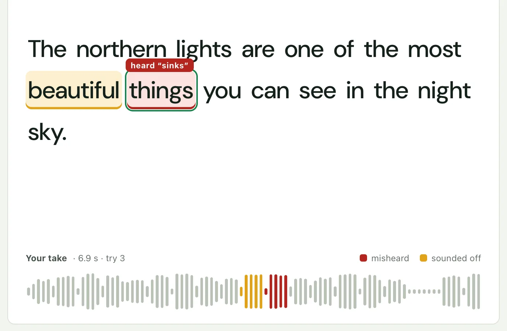
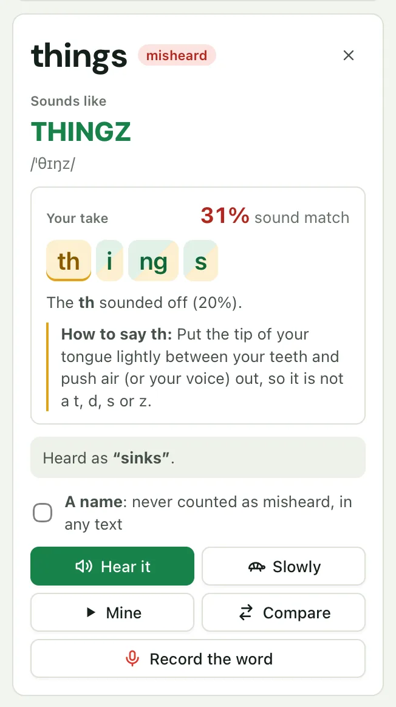
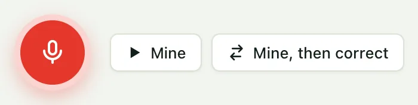
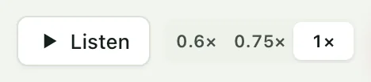
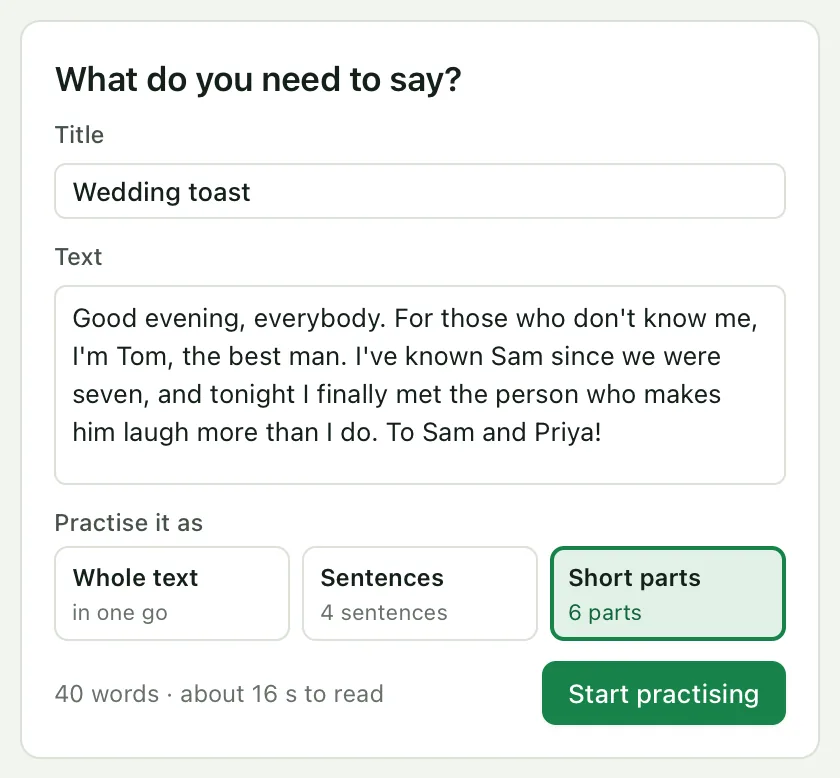
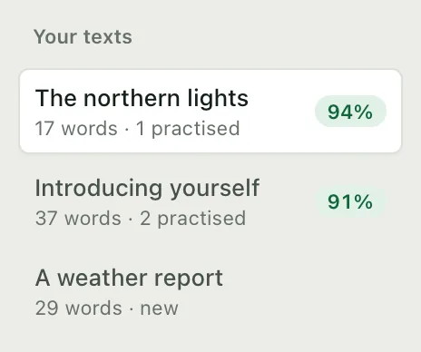
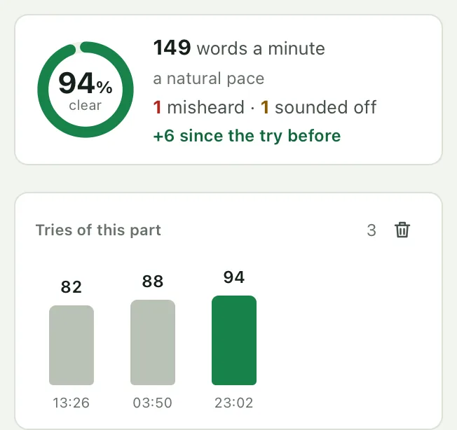
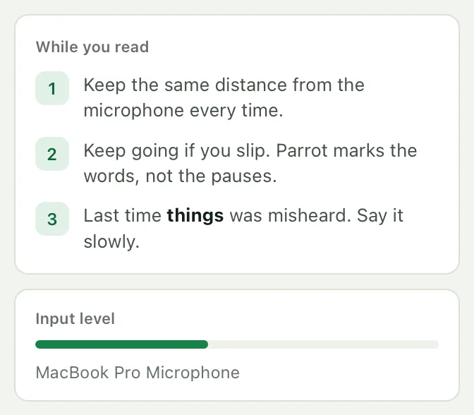
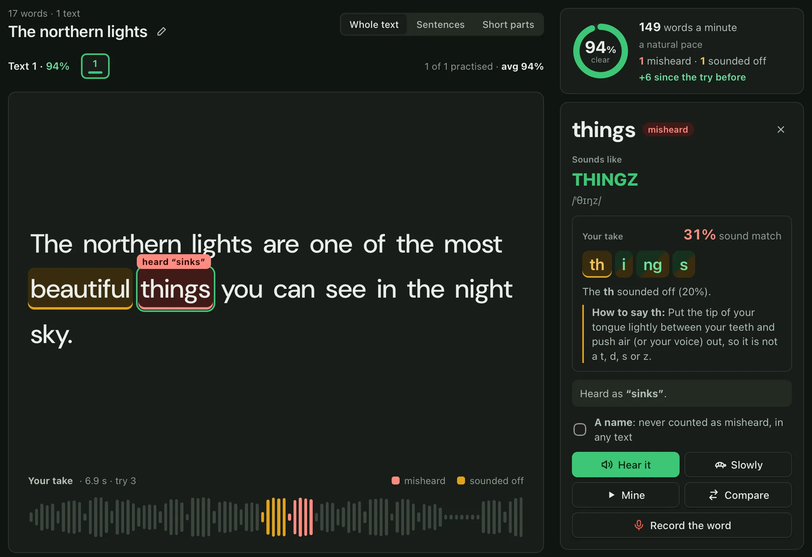

A verdict for every word
Words a listener would hear as something else turn red, with what was heard. Words that were close but not quite turn amber.

Like a pronunciation check, but for whole sentences: read what you actually need to say, and see exactly which words to work on.
Words a listener would hear as something else turn red, with what was heard. Words that were close but not quite turn amber.

Click a word to see it spelled the way it sounds, with its stress and IPA, and hear it alone or slowed down.

Play your take with each word lit as you said it, or a single word cut from it, followed by the correct reading.

Each sound of a word is marked as you said it: green, amber or red, half green when it was right but not sure, with a tip on how to make the weakest. Then record just that word, as often as you like, without touching the sentence's score.
th was the least sure. Put the tip of your tongue lightly between your teeth and push air out, so it is not a t, d, s or z.
Hear each part read at full speed or slowed to 0.75 or 0.6, with every word lit as it is spoken.

Paste an interview answer, a talk, a toast. Practise it whole, sentence by sentence, or in short parts cut at commas.

Every text you paste is kept with its score, and opens where you left off. Search them, rename them, switch in a click.

Every try is kept: watch a sentence go from 82% to 94%, and your pace settle at a natural 140 to 165 words a minute.

The microphone level shows you are heard, and tips remind you of the words that tripped you up last time.

Follows your system’s appearance, or pick one. Easy on the eyes for a late practice before a big day.

Speech recognition runs on your computer with Whisper, offline once its model is downloaded. There's no account and nothing is uploaded: your texts and recordings are plain files in a folder you can open, back up or delete. (A system voice marked “online” in Settings sends the text it reads, never your recordings, to its provider.)